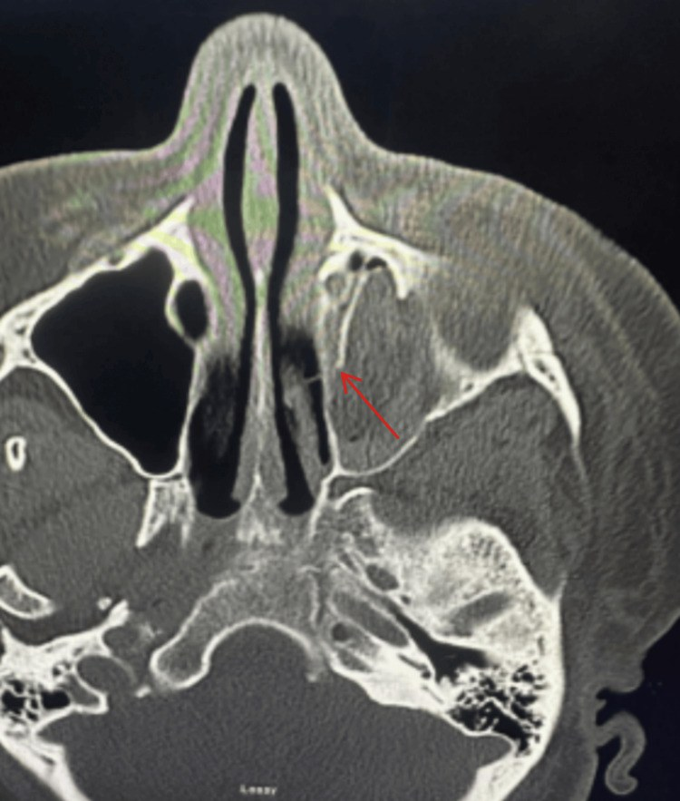
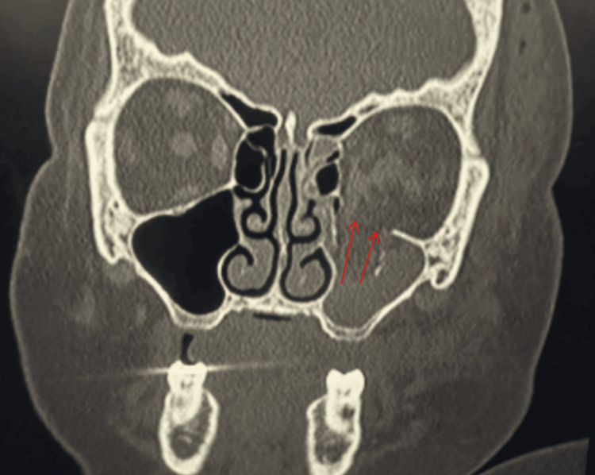

420 — Vỡ sàn hốc mắt & hội chứng khoang / Blow-out fracture & Orbital compartment syndrome
Tags: pattern:vo-xuong vung:hoc-mat
Mức chắc chắn (certainty): tổng hợp y văn (literature synthesis) — nhóm tự biên từ y văn mở, chưa gắn ca nguyên văn đơn lẻ.
1. Tổng quan — sàn vỡ vì mỏng + máu sau nhãn cầu ép thần kinh
- Chấn thương trực tiếp nhãn cầu → áp lực dồn xuống sàn mỏng → vỡ + mỡ/cơ thẳng dưới sa vào xoang hàm (giọt lệ/teardrop). TẠI SAO nhìn đôi dọc: cơ thẳng dưới kẹt → mắt không ngước được.
- Hội chứng khoang (OCS): máu sau nhãn cầu trong hốc xương kín → ép thần kinh thị/mạch. TẠI SAO mù nhanh: thiếu máu thần kinh thị không hồi phục sau 60–90 phút — mở góc mắt ngoài (canthotomy/cantholysis) trong 2 giờ.
- Ngưỡng: IOP > 40 mmHg + lồi mắt + cứng + giảm thị lực/vận nhãn = OCS lâm sàng, không chờ CT đủ liều.
2. Gamut chấn thương ổ mắt
- Blow-out sàn: giọt lệ + nhìn đôi dọc + tê má (thần kinh dưới ổ mắt) — kẹt cơ thì mổ.
- Vỡ thành trong: khí dưới da + xoang sàng mờ — dặn xì mũi nhẹ (khí ép vào thêm).
- Trapdoor trẻ em: vỡ ít + kẹt nhiều + nôn + nhịp chậm (phản xạ mắt-tim) — mổ sớm.
- OCS/máu sau nhãn cầu: lồi mắt + IOP cao + cứng — canthotomy 2 giờ.
3. Bảng so sánh
| Thực thể (entity) | Hình ảnh điển hình (CT) | Chốt vào (rule-in) | Chốt loại (rule-out) | Gợi ý xác nhận |
|---|---|---|---|---|
| Blow-out + kẹt cơ | Giọt lệ sàn + cơ sa + nhìn đôi dọc | Kẹt cơ + hạn chế ngước | Không kẹt + vận nhãn tốt → theo dõi | CT coronal, mổ giải phóng |
| OCS | Máu sau nhãn cầu + lồi mắt + IOP > 40 | IOP cao + cứng + giảm thị/vận nhãn | IOP thường + vận nhãn tốt → chưa OCS | Canthotomy 2 giờ, không chờ |
| Vỡ thành trong | Khí + xoang sàng mờ | Khí dưới da + chấn thương mũi | Không khí + không vỡ → phù nề đơn thuần | Kháng sinh nếu xoang mờ nhiễm trùng |
| Trapdoor trẻ | Vỡ mờ + kẹt rõ + nôn/bradycardia | Trẻ + nôn + nhịp chậm + nhìn đôi | Người lớn + không kẹt → vỡ thường | Mổ sớm (cơ thiếu máu nhanh) |
4. Protocol CT ổ mắt chấn thương
- CT lát mỏng ≤ 1 mm + coronal/sagittal MPR (sàn/giọt lệ chỉ rõ coronal).
- Đo IOP + khám vận nhãn/thị lực trước CT khi nghi OCS (đừng để máy CT làm trễ canthotomy).
- Mổ: kẹt cơ + nhìn đôi kéo dài, trapdoor trẻ, OCS sau canthotomy ổn định.
5. Cạm bẫy
- Máu xoang hàm sau chấn thương = gợi vỡ sàn — đừng đọc viêm xoang.
- Trắng mắt (white-eyed) trẻ: ngoài bình thường nhưng kẹt nặng — tin triệu chứng hơn ảnh.
- Xì mũi mạnh sau vỡ trong → khí ép thêm + viêm — dặn BN tuyệt đối.
6. Tự lượng giá — Blind Quiz
Ca 1 — Tai nạn, lồi mắt trái + IOP 46 + giảm vận nhãn. Đọc CT axial.

- Hỏi: máu ở đâu? Cơ nào kẹt? Chẩn đoán + xử trí trong bao lâu?
Bấm để hiện đáp án
- Máu sau nhãn cầu trái + kẹt cơ thẳng dưới → OCS trên nền vỡ sàn (đối chiếu coronal dưới) — canthotomy/cantholysis trong 2 giờ, không chờ chuyển viện.
- Nguồn: Brotzman et al., Cureus 2026 Fig. 1, CC BY 4.0.
Ca 2 — Vỡ sàn + vỡ thành trong cùng BN:

Bấm để hiện đáp án
- Vỡ sàn trái (mỡ/cơ sa + xoang mờ) + vỡ thành trong (lamina) — đánh giá kẹt cơ + vận nhãn quyết định mổ.
- Nguồn: Brotzman et al., Fig. 2, CC BY 4.0.
Bài liên quan chéo
- 400 – Tổng quan Mắt
- 410 – Giải phẫu hốc mắt (cơ thẳng dưới)
- 421 – Lồi mắt Graves (lồi mắt không chấn thương)
- 1413 – Tụt/mất cơ trực trong sau mổ lác: MRI/AS-OCT định vị, khi nào mổ lại
Không dùng để chẩn đoán độc lập khi chưa có người hướng dẫn.